这一课考的是经历，所以核心只有一个语法点：Have you ever…? 问的是「这辈子有没有过」，回答用现在完成时；但一旦开始讲细节，必须切回一般过去时（Yes, I have. I went there in 2019.）。这个切换是中国学生最常出错的地方 —— 要么整段都用完成时，要么一开口就用过去时。另外课本的指令是 Answer these questions and explain your answers，所以只答 Yes / No 是不完整的。
课本 p.80–85
20 个问题 + 1 个例题
完成时 → 过去时
01先把回答的骨架搭好
这一课的答案有固定三步，而且每一步的时态都不同。把这三步记牢，20 道题都是同一个架子。
先答 Yes / No — 用现在完成时Yes, I have. / No, I haven't — not once.
再讲细节 — 立刻切到一般过去时I did it about three years ago, in my second year of university.
最后解释 — 为什么、什么感受、会不会再做I'd do it again, but I'd go about it completely differently.
这个切换要练到条件反射。Have you ever been to Japan? → Yes, I have. I went in 2018.
注意第二句是 went，不是 have gone。因为一旦给出了具体时间（in 2018、three years ago、when I was twenty），就必须用一般过去时 —— 具体时间点和现在完成时不共存。
最常见的错误：把具体时间塞进完成时。 ✗ I have gone there in 2019. ✓ I went there in 2019. ✗ I have eaten it when I was ten. ✓ I ate it when I was ten. 规则很简单：一旦出现 in 2019 / when I was ten / last year / three years ago，就换成一般过去时。
B · 三种答法，按你的真实情况挑
答法
什么时候用
英语怎么开头
有，讲故事
确实经历过，而且有话可说
Yes, I have. It was when… / Yes — twice, actually.
没有，但有意思
没经历过，但能说得体面。「没有」之后必须接内容，否则就干掉了
No, I haven't. I've always wanted to, but… / Never. I'm not sure I could.
算也不算
边界情况 —— 比如「算不算作弊」「算不算喝多」
It depends how you define it. I'd say…
「没有」比「有」更需要准备。
被问 Have you ever run a marathon?，答 No. 就浪费了一次练习。
加一句就完全不同：No — I've done a half, and the last five kilometres convinced me never to try the full one.
没经历也是一种经历，把它讲出来。
这题在英语语境里很敏感。不必回避，但要说清 「这在某些地方是饮食传统，但现在很少见」，并且明确你自己的立场：It's part of the food culture in a few regions, though it's much rarer now and I've personally never tried it.
11 考试作弊
承认和否认都可以，但别长篇解释细节。Once, in secondary school, and I felt awful about it for weeks — which is probably why I never did it again.
15 喝多了
用自嘲，不要炫耀。More than once, and never in a way I'd want to describe.
17 发脾气
讲一个具体的小场景，最后说学到的：I lost it at a colleague once over something trivial, and I've been much slower to speak since.
19 批评好友
区分「批评」和「背后说坏话」。To their face, yes — that's what friends are for. Behind their back, no.
03课本例题：一段「有反思」的经历
例题问 Have you ever donated money or time to a charity?。这段答案厉害的地方是：它没有停在「捐过」，而是描述了一个循环 —— 广撒网 → 觉得没用 → 变挑剔 → 怀疑动机 → 干脆不捐 → 内疚 → 又开始广撒网。这种「我知道自己矛盾」的诚实，比任何正面回答都有分量。
Example
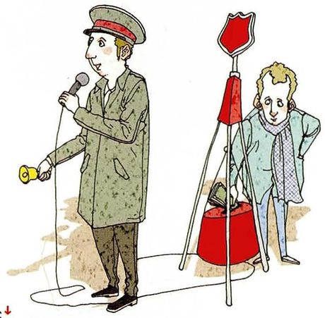
Have you ever donated money or time to a charity? /ˈtʃerəti/
What you seeA man in a cap and long coat holding a microphone and a small bell, standing next to a red collection box mounted on a stand. Street fundraising.
What it means你有没有给慈善机构捐过钱或时间。注意 money or time —— 捐时间（做志愿者）也算。
Say it like this"I go through cycles. Sometimes I try to give to every worthy cause I come across, and then I decide my little contributions are too small to make any difference. So I get more selective and give more to just a few charities. Then I start worrying that they're not genuinely interested in solving the problem and only in making money for themselves, so I stop giving altogether. And then I feel guilty, and start making indiscriminate donations all over again."
这段里四个可以直接抄走的表达：
① go through cycles —— 「会循环反复」，描述自己摇摆不定的状态，非常地道；
② a worthy cause —— 「值得支持的事业」，cause 在这里不是「原因」而是「事业」；
③ make a difference —— 「起作用」，比 help 更强调效果；
④ get more selective —— 「变得更挑剔」，selective 是本课脚注词。
「我经常做……」不要一律用 I often…。
想表达「我会这样反复」，英语更常说 I go through phases 或 I tend to…。
课本这句 I go through cycles 就是范例 —— 它同时表达了「重复」和「自己也知道这有点可笑」。
04二十个问题：怎么讲出经历
每张卡三段：What you see 照着图描述，What it means 说清这题问什么、有没有敏感点，Say it like this 给三档答案：① Yes/No + 一句 / ② 加一段细节（切过去时）/ ③ 加反思或对比。第三档请换成你自己的真事。
01
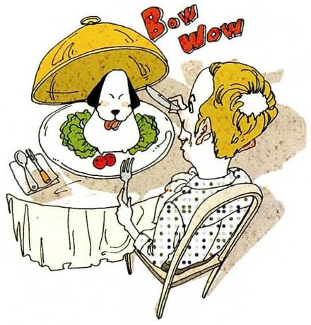
Have you ever eaten dog meat?
What you seeA woman seated at a restaurant table lifting a silver cloche, and underneath it a small white dog sits among vegetables. A joke in poor taste.
What it means你吃过狗肉吗。这题在英语语境里高度敏感，见第 02 节 C。回答要平静、就事论事。
Say it like this①No, I haven't — and I wouldn't. ②No, I haven't. It's part of the food culture in a few regions of China, but it's much rarer now than people abroad assume, and it's not something my family ever did. ③No, never. I'd answer carefully, though, because this question usually isn't really about food — it's testing whether I'll defend something. The honest version is that it exists in a few places as a regional tradition, that a lot of Chinese people find it as strange as you do, and that the practice has declined a lot in my lifetime. So: not for me, and I'd rather talk about why it's fading.
02
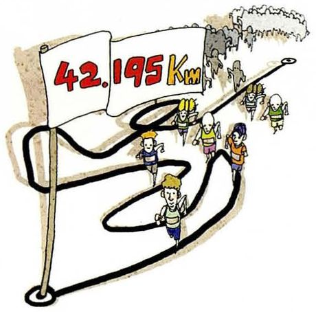
Have you ever run in a marathon?
What you seeA winding black route drawn across a map, marked 42.195 km, with tiny runners spread along it. Twenty-six miles, drawn as a squiggle.
What it means你跑过马拉松吗。run in a marathon —— 注意介词 in，参加比赛用 in。
Say it like this①No, never — that's a long way. ②No, I haven't. I've done a half marathon, which was about as much as my knees were willing to discuss. ③No. I ran a half three years ago and finished in just under two hours, and the last three kilometres taught me that the full distance is a different sport. People who've done both say the marathon starts at thirty, not at the beginning. I'd like to try it once, but I'd want a year of proper training first, and I've been saying that for three years.
03
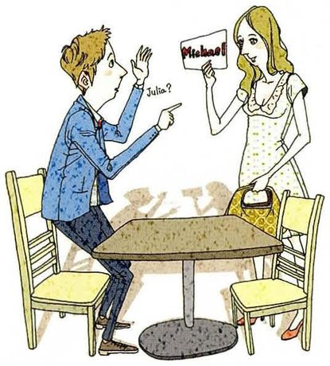
Have you ever gone on a blind date?
What you seeA man and a woman at a small table, the woman holding up a card with Hi Bob written on it, the man waving awkwardly. They've worked out how to identify each other.
What it means你相亲过吗。课本脚注：blind date = 由第三方安排的、双方此前没见过的约会。
Say it like this①Yes, once — that was enough. ②Yes, twice, both arranged by an aunt. The first one was fine and we had nothing to say to each other; the second one I still think about, and not in a good way. ③Yes, a few times — it's much more normal in China than people here seem to think, and it's not always awkward. What I learned is that the whole thing works better if you agree in advance that it might go nowhere. The worst ones were the ones where both families were watching, because then neither of us could be honest.
04
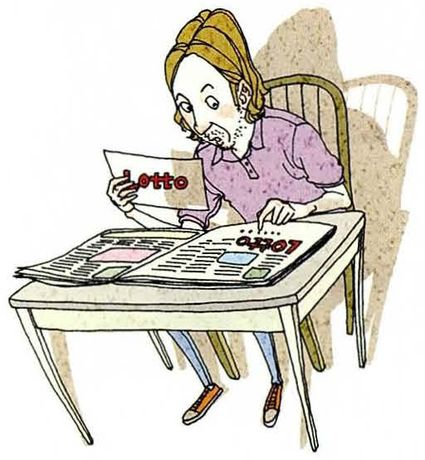
Have you ever bought a lottery ticket?
What you seeA woman sitting at a table with a lottery slip in front of her, pen in hand, newspapers spread out around her. Picking numbers with care.
What it means你买过彩票吗。注意 buy a ticket —— 彩票是 ticket，不是 lottery 本身。
Say it like this①Yes, a couple of times, just for fun. ②Yes, maybe five times in my life. Always the small ones, and I've won about eight yuan in total, which I'm counting as a win. ③Yes, once, deliberately. I wanted to know what it felt like to spend two yuan on something with a one-in-a-million chance. What surprised me was how long I kept the ticket — about three days, and I checked the numbers more than once. That's a lot of hope for two yuan, which I suppose is the product they're actually selling.
05
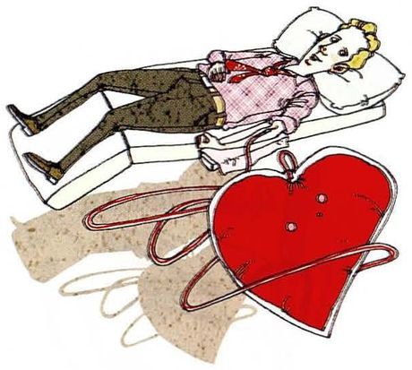
Have you ever donated your blood?
What you seeA man lying back on a bed with his sleeve rolled up, a drip line running from his arm, and an enormous red heart beside the bed.
What it means你献过血吗。注意动词 donate —— 献血是 donate blood，不是 give blood 以外还说 sell。
Say it like this①Yes, several times. ②Yes, four or five times. The first was in my first year of university, when a van came to campus and my whole dorm went together. ③Yes, five times, and I'd go again except I'm now slightly below the weight limit. What I remember from the first one is being surprised by how ordinary it is — you sit there for twenty minutes with a biscuit, and somebody's life is quietly improved. I've never known who received it, which is the strange part.
06
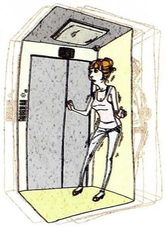
Have you ever gotten locked in an elevator?
What you seeA woman standing inside a small lift, one hand on the rail, looking towards the doors. Nothing dramatic is happening — which is the joke.
What it means你被困在电梯里过吗。注意 get locked in —— 「被困在里面」，用 get + 过去分词。
Say it like this①No, thankfully — that's one of my smaller fears. ②No, but I've been in one that stopped for about ninety seconds and I've never been so polite to strangers in my life. ③No. The closest was an old building where the lift stopped between floors for a minute or two — long enough for everyone to stop talking and then start making the same joke about it. What struck me was how quickly the polite small talk took over. Nobody panicked; we all just became extremely well-mannered, which I've since decided is a very human response.
07
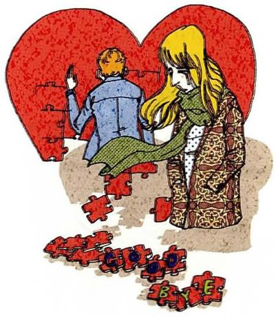
Have you ever said farewell to a loved one?
What you seeA man and a woman standing close inside a big red heart, with red flowers scattered on the ground below them. A goodbye that mattered.
What it means你和亲人告别过吗。注意 farewell 比 goodbye 正式，通常指长时间的或永久的离别。这题可能涉及丧亲，回答要留余地。
Say it like this①Yes — I think most people have, by my age. ②Yes, when my grandfather died. It wasn't a dramatic goodbye — he'd been ill for a long time and we'd already said the important things. ③Yes, and I'd separate two kinds. There's the goodbye you know is coming, which you can prepare for and say properly. And there's the one where somebody leaves for a job or a country and you assume you'll see them at New Year — those are worse in a way, because you didn't treat them as farewells. The people I miss most are the ones I said "see you soon" to.
08
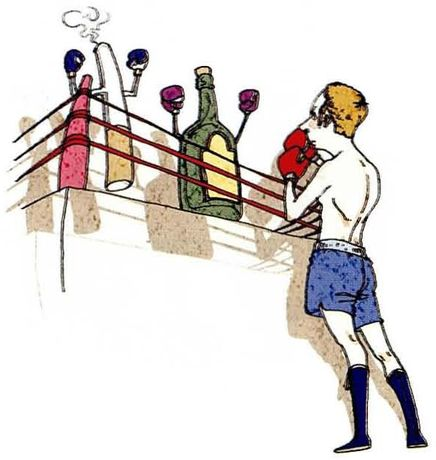
Have you ever tried to stop some bad habit?
What you seeA man standing on a balcony with his back to a tray holding glasses, wine bottles and a cigarette. He's turned away from it, deliberately.
What it means你试过戒掉某个坏习惯吗。注意 try to stop —— 暗示可能失败过，回答可以带点自嘲。
Say it like this①Yes, several, with mixed results. ②Yes — I quit late-night phone use twice last year. The successful one was biting my nails, which I stopped by accident rather than by effort. ③Yes, and I've noticed the ones I've actually stopped are the ones I never announced. Every habit I told people about is still here. So the practical lesson is that telling people seems to give you the same satisfaction as doing it, and then you don't need to do it. I'm aware this would make terrible advice for anyone who needs support.
09
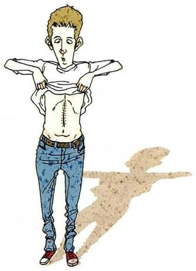
Have you ever had a major operation?
What you seeA young man standing and lifting his t-shirt with both hands, showing his stomach. Looking for a scar, or showing one.
What it means你做过大手术吗。课本脚注：operation = 外科手术。不要追问别人的病史，但自己被问时可以简单回答。
Say it like this①No, thankfully — nothing beyond a filling. ②No, I've been lucky. The most serious thing was having my appendix out, and I'm not even sure that counts as major. ③No, and I'm aware that's mostly luck rather than anything I did. What I'd say is that the people I know who have had one describe the recovery as the hard part, not the operation — you don't remember the surgery, but you remember eight weeks of not being allowed to lift anything. That's the part nobody warns you about.
10
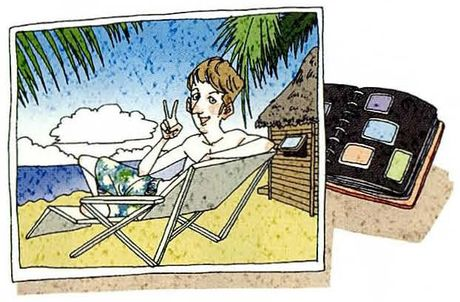
Have you ever gone abroad on vacation?
What you seeA framed holiday photo of a woman reclining on a beach chair under palm trees, with a suitcase propped beside the frame. A memory on display.
What it means你出国度过假吗。注意 go abroad 前面不加 to；on vacation 用 on。
Say it like this①Not really — only once, and it was for work. ②Not for a holiday. I went to Japan for a conference in 2019 and stayed two extra days, so it half counts. ③Never for a holiday, which is a strange gap at twenty-five. Two reasons: the visa paperwork is a genuine obstacle for a Chinese passport, and a PhD doesn't leave long enough stretches. So my abroad is one conference where I barely left the hotel. I've stopped saying "after I graduate" because I've seen what happens to that plan.
11
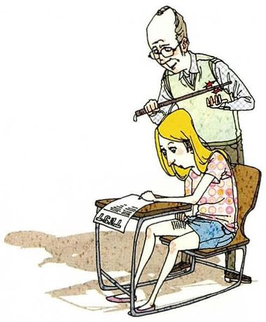
Have you ever cheated on a test?
What you seeA girl sitting at an exam desk with a sheet in front of her, and a grey-haired invigilator standing directly behind her chair, looking down. She knows he's there.
What it means你考试作弊过吗。课本脚注：cheat = 以不诚实的方式参加考试。
Say it like this①No, never — I was too frightened of being caught. ②Once, in secondary school, and I felt awful about it for weeks. It wasn't even worth it — I'd have passed anyway. ③Once, and the interesting part is why. I was prepared — I'd have got a decent mark. I did it because someone next to me was doing it and I didn't want to feel like the only one playing by the rules. So it wasn't desperation, it was fairness, which is a much stranger reason and probably a commoner one. I never did it again, mainly because the feeling afterwards was so disproportionate to the offence.
12
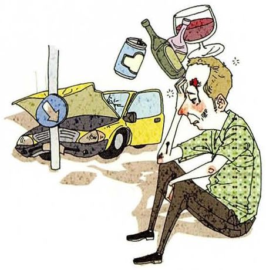
Have you ever done something you regretted later?
What you seeA man sitting on the road with his head in his hands, a car behind him with its bonnet crumpled, bottles and a wine glass flying through the air above.
What it means你有没有做过后来后悔的事。课本脚注：regret = 为做过的事感到难过、希望没做过。这题人人都答 yes —— 关键是选什么故事。
Say it like this①Of course — hasn't everyone? ②Yes. The one I think about most is a conversation I didn't have with my grandmother, because I assumed there'd be another chance. ③Yes, but I'd distinguish regret from guilt. Guilt is about something you did that was wrong. Regret is usually about something you didn't do — I regret the things I didn't try far more than the things I got wrong, and the wrong ones at least taught me something. So the practical version is that I now say yes to things I'm unsure about, because I've learned what the other kind of regret feels like.
13
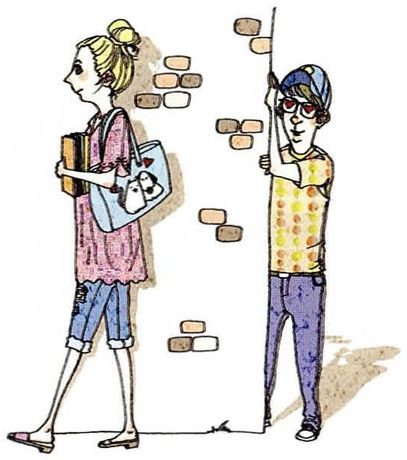
Have you ever fallen in love with someone who was not interested in you?
What you seeA young man leaning against a brick wall, watching a woman walk past carrying books and a folder. She's looking straight ahead.
What it means你有没有爱上一个不爱你的人。注意 be interested in sb —— 这里指「对某人有兴趣」，即感情上的。
Say it like this①Yes — I think that's almost a rite of passage. ②Yes, at nineteen, for about a year. It was entirely one-sided and everyone except me could see it, which is the humiliating part looking back. ③Yes, and what I'd say is that the feeling is real even when the situation isn't. At the time I thought I was being patient; I was actually just not listening. The thing that finally shifted it was somebody asking me a simple question — what do you actually like about her, apart from that she doesn't want you? I couldn't answer it, which told me everything.
14
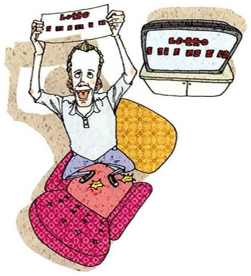
Have you ever won any money or anything else in a lottery?
What you seeA man sitting up with both arms raised holding a lottery ticket, an open case of more tickets beside him, a big grin. He's won something.
What it means你中过彩票吗（钱或别的）。和第 4 题（买没买过）是一对，可以连着答。
Say it like this①Never. I've won about eight yuan in total. ②No, nothing. The best I've done is getting my money back on a scratch card, which I've decided is technically neither winning nor losing. ③Never, and I've made peace with it. But the closest thing was winning a small prize in a department raffle — a bag of coffee beans — and I remember being unreasonably pleased for two days. Which tells me that the pleasure isn't proportional to the value at all, it's about something arriving that you didn't work for.
15
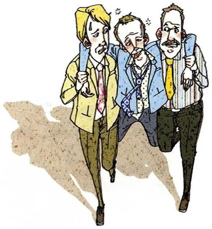
Have you ever drunk too much?
What you seeThree men walking along arm in arm, ties loosened, faces flushed, hair mussed. They're holding each other up.
What it means你喝醉过吗。drink too much —— 注意 drink 的过去分词是 drunk，不规则。
Say it like this①More than once, and never in a way worth describing. ②Yes, a few times at university. The worst one ended with me explaining the plot of a film to a stranger for about forty minutes. ③Yes, and I'd say the interesting thing isn't that it happened, it's that the amount changed completely after I turned about twenty-three. In my first year, drinking a lot was normal and nobody thought about it. Now two glasses make me useless the next day, so the calculation is different. I don't think that's virtue — it's just that my body started sending invoices.
16
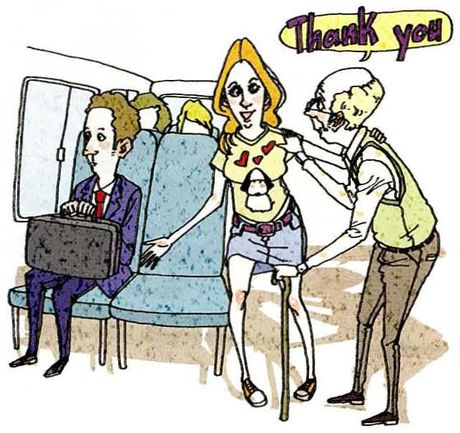
Have you ever done something you were very proud of?
What you seeA young man standing up from his seat on a bus and gesturing for an elderly man with a stick to sit down. A speech bubble says Thank you.
What it means你有没有做过让自己很自豪的事。这题很容易答得太谦虚—— 英语里允许、也期待你说一件真事。
Say it like this①Yes — one thing, though it's small. ②Yes. In my final year of undergrad I taught maths to a neighbour's kid for a year, unpaid, and he went from failing to passing. It's the only thing I've done where I could see the result immediately. ③Yes, but it's not impressive. I once spent two weeks arguing with an administration about a mistake they'd made on a classmate's transcript — she'd been trying for months and had given up. I got it fixed. What I'm proud of isn't the outcome, it's that I noticed she'd stopped trying, and I'd never have noticed two years earlier. That felt like evidence I'd changed.
17
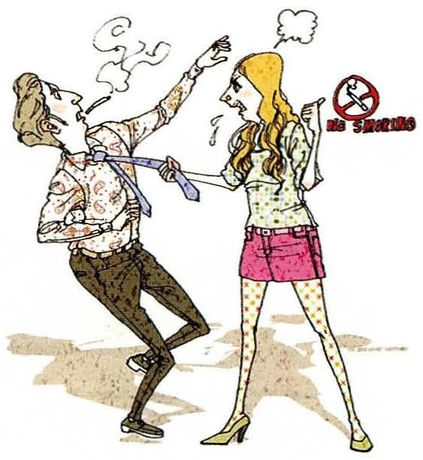
Have you ever lost your temper?
What you seeA man and a woman facing each other and shouting, steam rising from the man's head, a red anger symbol between them.
What it means你发过脾气吗。课本脚注：lose one's temper = 突然变得非常愤怒。
Say it like this①Yes, rarely, but yes. ②Yes. The last time was at a lab mate over something completely trivial — a booking clash — and I knew within ten seconds that I was in the wrong. ③Yes, and I've noticed it never happens about the thing I'm actually angry about. The blow-up is always over something small, and the real cause is three weeks of not saying anything. So the practical lesson is that if I'm irritated by a small thing, that's information about a big thing I've been avoiding. I'm much better at saying the big thing early now, mostly because I've seen how ugly the small version looks.
18
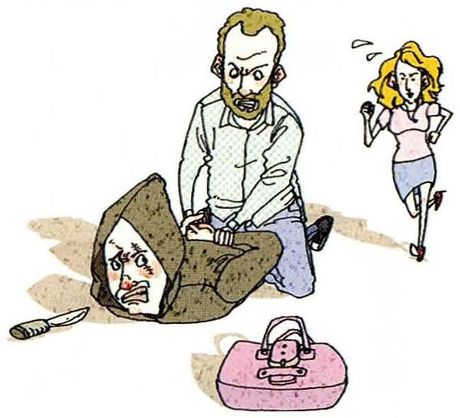
Have you ever done something brave or heroic?
What you seeA bearded man kneeling on a mugger in a hooded top, holding him down, while a blonde woman runs away and a knife and a pink handbag lie on the ground.
What it means你有没有做过勇敢或英勇的事。大多数人都会答 no —— 答不好就显得在谦虚或矫情，关键是把「勇敢」定义小一点。
Say it like this①No, nothing like that. ②Not heroic, no. The closest was stepping in when a stranger was being shouted at on a bus, which took about four seconds of courage and ruined my whole afternoon with adrenaline. ③Nothing heroic, and I've thought about why. I'd define brave as doing something with a real cost, and most of my decisions have had none. The one candidate was telling my supervisor I thought his plan was wrong — I was shaking and I was right, and afterwards I realised that the cost was entirely in my head. Which is a bit deflating: most of what feels brave at twenty-five would look like a Tuesday to anyone else.
19
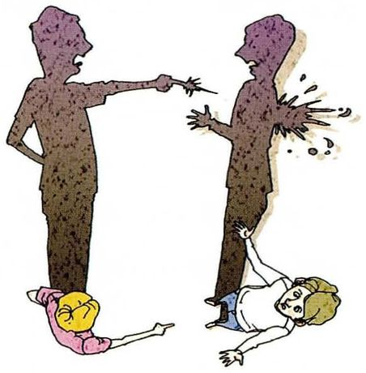
Have you ever criticized your best friend?
What you seeTwo dark silhouetted figures facing each other, one pointing a finger at the other, and beneath them small versions of people tumbling over each other.
What it means你批评过最好的朋友吗。这题的关键区分是「当面批评」和「背后说坏话」。
Say it like this①To their face, yes. Behind their back, no. ②Yes — twice, both times about the same person she was dating. She asked me what I thought, and I told her, and it was a bad week for us. ③Yes, and I'd separate the two things because they're completely different. Criticism to someone's face is part of the job of being a friend. What I've had to learn is not to do it while they're telling me about something that's gone wrong — there's a moment when people want sympathy, not analysis, and giving the analysis early is the same as not listening. I get it wrong about half the time.
20
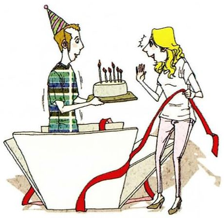
Have you ever given someone a surprise party?
What you seeA man in a party hat holding a small birthday cake with candles, and a woman beside him with both hands up in surprise. Red ribbon everywhere.
What it means你给别人办过惊喜派对吗。课本脚注：surprise party = 为事先不知情的人办的派对。
Say it like this①Yes, once, and it nearly failed. ②Yes, for a flatmate's birthday last year. Six of us hid in the kitchen for about twenty minutes, which is a long time to whisper. ③Yes, and I'd warn anyone planning one: it only works if the person would actually enjoy being surprised. My flatmate loved it. A friend of mine was given one and she was clearly uncomfortable for the entire evening, because she hadn't prepared and had to be delighted in front of twenty people. So the kind thing is sometimes not to do the nice thing.
05重点词汇（美式音标）
课首页脚注给了 16 个词，是全书第二多的一课。其中 go through、come across、selective 这几个在口语里极常用。
A · 课本脚注的词（上半）
词
音标
课上怎么用
中文
donate
/ˈdoʊneɪt/
donate money to a charity / donate blood 后接 to。献血用 donate，不用 give
捐赠
charity
/ˈtʃerəti/
give to a charity 慈善机构。复数 charities
慈善机构
go through
/ɡoʊ θruː/
go through cycles 经历（一番过程）。本课核心短语
经历
cause
/kɔːz/
a worthy cause 这里不是「原因」，是「事业」
事业
come across
/kʌm əˈkrɔːs/
causes I come across 偶然遇到、碰见
偶然遇到
contribution
/ˌkɑːntrɪˈbjuːʃn/
small contributions
贡献、捐款
selective
/sɪˈlektɪv/
be more selective 挑剔的、有选择的
有选择的
genuinely
/ˈdʒenjuɪnli/
not genuinely interested 真正地。比 really 更有分量
真正地
indiscriminate
/ˌɪndɪˈskrɪmɪnət/
indiscriminate donations 不加区分的。课本里是中性偏褒
不加区分的
B · 课本脚注的词（下半）
词
音标
课上怎么用
中文
blind date
/blaɪnd deɪt/
go on a blind date 相亲。注意介词 on
相亲
operation
/ˌɑːpəˈreɪʃn/
have a major operation 外科手术。手术用 have
手术
cheat
/tʃiːt/
cheat on a test / cheat on sb 注意两种用法：考试用 on a test，出轨也说 cheat on sb
作弊
regret
/rɪˈɡret/
something you regretted later 后悔。后接名词或动名词 -ing
后悔
lose one's temper
/luːz wʌnz ˈtempər/
I lost my temper 发脾气。注意过去式 lost
发脾气
surprise party
/sərˈpraɪz ˈpɑːrti/
give someone a surprise party
惊喜派对
farewell
/ˌferˈwel/
say farewell to sb 比 goodbye 正式，指长别或永别
告别
C · 「讲经历」的核心动词块
表达
音标
用法
中文
I've never once…
/aɪv ˈnevər wʌns/
I've never once been late. 加强否定，比 never 更有力
一次都没有
for the first time
/fər ðə fɜːrst taɪm/
I did it for the first time in 2019. 配过去时
第一次
at the time
/æt ðə taɪm/
At the time I didn't think it was a big deal. 当时（和现在对比）
当时
looking back
/ˈlʊkɪŋ bæk/
Looking back, that was the humiliating part.
回头看
rite of passage
/raɪt əv ˈpæsɪdʒ/
It's almost a rite of passage. 人生必经的阶段
成长必经之事
make peace with
/meɪk piːs wɪð/
I've made peace with it. 接受了（不如意的事）
坦然接受
be worth it
/bi wɜːrθ ɪt/
It wasn't even worth it. 值不值得
值得
it half counts
/ɪt hæf kaʊnts/
I stayed two days, so it half counts. 勉强算
勉强算
06老师大概率会问的问题
这一课的题跨度大，老师通常会挑一两个往深里挖，或者反过来问你「这些经历怎么改变了你」。
Which of these experiences changed you the most?
Saying farewell to someone, probably — my grandfather. Not at the time; at the time it was mostly administrative, because there were things to arrange. It changed me about a year later, when I noticed I'd started calling my parents for no reason. I don't think experience changes you on the day. It changes what you do afterwards, and you only spot it in hindsight.
区分「经历发生的当天」和「一年后才发现的变化」，是很成熟的观察。最后那句 you only spot it in hindsight 可以直接背走。
Is there anything on this list you'd like to do before you're thirty?
A marathon, and I'm aware how predictable that is. But I'd pick it for a specific reason: it's the only one on the list that's purely a matter of training. Everything else depends on other people or on luck — the blind date, the lottery, the surprise party. A marathon just needs a year and a pair of shoes, and I like that there's nothing to negotiate.
「选这个是因为它只取决于我自己」—— 把愿望和可控性联系起来，比单纯说「我想跑马拉松」有内容得多。
Which question here is the hardest to answer honestly?
The one about eating dog meat, but not for the reason you'd expect. The honest answer is easy — I haven't. The hard part is that a simple "no" lets the question stand as if it were a reasonable thing to ask someone. And the one about cheating: it's easy to say no, and I'd want you to believe me, which is exactly when people are least reliable.
I'd say experience is the only teacher for some things and a terrible one for others. It's unbeatable for anything with your hands — you can't learn to drive from a book. But for decisions you make once, like a marriage or a big move, experience teaches you nothing, because you only get the one case. And people often learn the wrong lesson from a single bad outcome, which is worse than learning nothing.
区分「可以反复练的事」和「只能做一次的决定」，是很有说服力的框架。最后那句 learning the wrong lesson is worse than learning nothing 值得背。
Would you answer these differently in Chinese?
A few, yes. I'd be much more careful about the ones involving family — the farewell, and anything about my parents. In Chinese I'd probably say less and mean more. And I noticed I was happy to describe failing at things in English, which I'm not sure I'd do at home, because here it feels like practice rather than a confession.
最后那句 practice rather than a confession 精确解释了为什么用外语讲私事反而更容易 —— 这是很多学习者都有但说不清的感受。
Have you ever regretted not doing something?
Yes, and those are the ones I actually count. I can list four things I got wrong and laugh about them. The ones I didn't do are a shorter list and I think about them more: a year abroad I turned down at twenty-one, because it would have delayed my degree by a year and I was in a hurry. I wasn't in a hurry about anything, as it turns out.
最后一句 I wasn't in a hurry about anything, as it turns out 是很好的收尾 —— 它用一个 hindsight 的发现推翻了当时的理由，是叙述里最有力量的写法。
07这节课最容易犯的错
这一课的错误集中在时态，因为每道题都在考「有没有过」。把具体时间塞进完成时是最常见的失误。
✗Yes, I have gone to Japan in 2018. ✓Yes, I have. I went to Japan in 2018.
出现具体年份就必须用一般过去时。这是本课头号错误，20 道题里每一题都会撞上。
✗Have you ever went to Japan? ✓Have you ever been to Japan? / Have you ever gone to Japan?
have 后面必须用过去分词：been 或 gone，不能用 went。been 强调「去过」，gone 强调「去了（可能还在那）」。
✗I have ever eaten dog meat. ✓I've eaten it once. / I have never eaten it.
ever 只用在疑问句和否定句里，肯定句不能说 I have ever。肯定句用 once / before / a few times。
✗I drunk too much last night. ✓I drank too much last night.
drink 的过去式是 drank，过去分词才是 drunk。这一课第 15 题的题干用的是 drunk，很容易带错。
✗I have cheated in a test when I was in high school. ✓I cheated in a test when I was in high school.
when I was in high school 是明确过去时间，用一般过去时。作弊的介词一般是 on a test。
✗I lost my temper to my friend. ✓I lost my temper with my friend.
lose one's temper with sb。对某人发火用 with，不是 to。
✗I regretted to do that. ✓I regretted doing that.
regret doing 是「后悔做过」；regret to do 是「遗憾地要告知」（正式书面，如 regret to inform you）。两个意思完全不同。
✗Have you ever been abroad on vacation? — No, I haven't. But I want to go. ✓No, I haven't — and it's a real gap at my age. Two reasons: the visa paperwork, and a PhD doesn't leave long enough stretches. 课本要求 explain your answers，只答 No 加一句愿望是不够的。给理由，答才算完整。
08五十分钟怎么用
这一课的准备重点不是 20 个答案，而是三四个真故事—— 它们能覆盖大部分题目。
课前 10 分钟：把第 02 节 A 表的时态切换念三遍Yes, I have. I went there in 2019. 这一来一回练顺了，20 道题都不会再错时态。